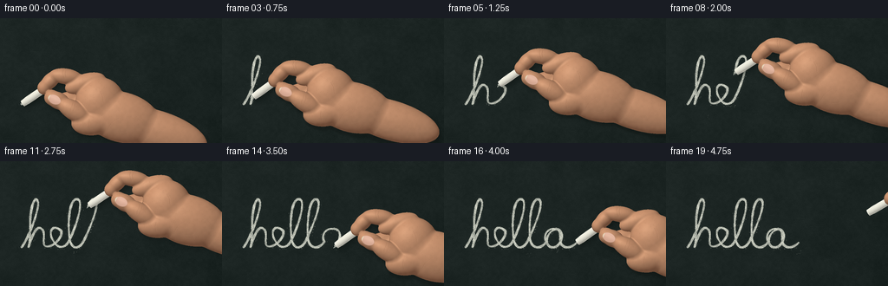
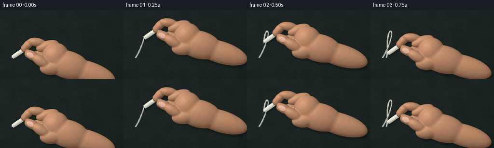

CODING AGENTS AS PIXEL WORLD MODELS
traex/GPT-6.1-Sol · phygen_031
点击播放 · 原生 RGB 像素
逐轮保存的候选
回放视频、检查图与代码变化。
每份候选均可单独播放。实际图片检查记录在下方工具轨迹中。
候选 01播放与检查图
点击播放 · 原生 RGB 像素


展开代码变化
--- 上一保存版本
+++ 本次保存版本
@@ -0,0 +1,322 @@
+"""Procedural, deterministic chalk-on-slate close-up. No external assets."""
+from pathlib import Path
+import json
+import math
+import numpy as np
+from PIL import Image, ImageDraw, ImageFilter
+import artifact_io
+
+ROOT = Path(__file__).resolve().parent
+S = 3
+rng = np.random.default_rng(31807)
+
+def noise(h, w, small_h, small_w):
+ a = rng.random((small_h, small_w))
+ return np.asarray(Image.fromarray((a*255).astype('uint8')).resize((w,h),Image.Resampling.BICUBIC),dtype=np.float32)/255
+
+def board_image(w,h):
+ H,W=h*S,w*S
+ yy,xx=np.mgrid[:H,:W].astype(np.float32)
+ broad=noise(H,W,9,15)-.5
+ medium=noise(H,W,45,80)-.5
+ grain=rng.normal(0,1,(H,W)).astype(np.float32)
+ uneven=4.0*broad+3.1*medium+1.9*grain
+ illumination=3.0*(1-xx/W)+1.5*(1-yy/H)
+ vignette=-4*((xx/W-.43)**2+(yy/H-.42)**2)
+ rgb=np.zeros((H,W,3),np.float32)+np.array([26,35,33],np.float32)
+ rgb+=(uneven+illumination+vignette)[...,None]
+ # Ghosts of older erasures, not readable marks.
+ ghost=Image.new('L',(W,H),0); d=ImageDraw.Draw(ghost)
+ for i in range(115):
+ x=rng.uniform(-30,w); y=rng.uniform(0,h)
+ length=rng.uniform(8,62)
+ d.line([(x*S,y*S),((x+length)*S,(y+rng.normal(0,1.8))*S)],fill=int(rng.uniform(3,18)),width=int(rng.uniform(1,4)*S))
+ ghosts=np.asarray(ghost.filter(ImageFilter.GaussianBlur(2.4*S)),np.float32)/255
+ rgb+=ghosts[...,None]*24
+ # Thin shallow grooves, flecks, and irregular slate grain.
+ scratch=Image.new('RGBA',(W,H),(0,0,0,0)); d=ImageDraw.Draw(scratch)
+ for i in range(125):
+ x=rng.uniform(0,W); y=rng.uniform(0,H)
+ d.line([(x,y),(x+rng.uniform(3,47),y+rng.uniform(-3,3))],fill=(145,157,150,int(rng.uniform(4,12))),width=1)
+ base=Image.fromarray(np.clip(rgb,0,255).astype('uint8')).convert('RGBA')
+ base.alpha_composite(scratch)
+ return base,medium,grain
+
+# An organic union of ellipsoids: palm, finger phalanges and wrist.
+# Coordinates are image pixels, with z measured out from the slate.
+parts=[]
+def ell(c,r,theta=0):
+ t=np.deg2rad(theta)
+ parts.append((np.array(c,np.float32),np.array(r,np.float32),np.cos(t),np.sin(t)))
+
+ell((115,15,29),(46,29,20),15) # metacarpal mass
+ell((158,31,26),(58,23,17),18) # wrist exits the right edge
+ell((90,-3,28),(28,28,20),-9)
+# bent index, reaching over the stick
+ell((73,-24,27),(24,11,10),-17)
+ell((51,-32,26),(19,9.1,9.5),8)
+ell((33,-27,22),(14,8.3,8.5),-44)
+ell((26,-19,20),(8,8,8),-30)
+# middle finger behind the chalk; two tucked fingers below it
+ell((72,0,14),(25,10,10),12)
+ell((52,-6,13),(15,8,9),-13)
+ell((80,13,16),(23,10,10),19)
+ell((63,7,15),(15,9,9),23)
+ell((92,24,18),(22,10,10),12)
+# thumb, closest to the camera, pressing the shaft
+ell((82,21,33),(25,15,14),-4)
+ell((61,8,36),(22,11.2,11.5),30)
+ell((42,-4,32),(14,9.8,10),25)
+ell((34,-8,29),(8,8.8,8.2),20)
+
+def skin_field(p):
+ result=None
+ for c,r,co,si in parts:
+ q=p-c
+ u=np.stack([co*q[:,0]+si*q[:,1],-si*q[:,0]+co*q[:,1],q[:,2]],axis=-1)
+ k0=np.linalg.norm(u/r,axis=-1)
+ k1=np.linalg.norm(u/(r*r),axis=-1)
+ dist=k0*(k0-1)/np.maximum(k1,1e-7)
+ if result is None: result=dist
+ else:
+ k=2.3
+ h=np.maximum(k-np.abs(result-dist),0)/k
+ result=np.minimum(result,dist)-h*h*k*.25
+ return result
+
+axis=np.array([.804,-.547,.230],np.float32);axis/=np.linalg.norm(axis)
+chalk_start=np.array([1.2,-.8,4.1],np.float32)
+chalk_center=chalk_start+axis*19
+
+def chalk_field(p):
+ q=p-chalk_center
+ axial=np.sum(q*axis,axis=-1)
+ radial=np.linalg.norm(q-axial[:,None]*axis,axis=-1)
+ # blunt, abraded end, with a mild bevel rather than a pointed tip
+ radius=4.05-.55*np.clip((-axial-12)/6,0,1)
+ sides=radial-radius
+ cap=np.abs(axial)-19
+ d=np.stack([sides,cap],axis=-1)
+ return np.minimum(np.maximum(sides,cap),0)+np.linalg.norm(np.maximum(d,0),axis=-1)-.32
+
+def trace(field,xx,yy,z_start=65):
+ x=xx.ravel();y=yy.ravel(); n=len(x)
+ z=np.full(n,z_start,np.float32);live=np.ones(n,bool); hit=np.zeros(n,bool)
+ for i in range(110):
+ ids=np.flatnonzero(live)
+ if not len(ids):break
+ p=np.stack([x[ids],y[ids],z[ids]],axis=-1)
+ d=field(p)
+ reached=d<.035
+ hit[ids[reached]]=True
+ live[ids[reached]]=False
+ rem=ids[~reached]
+ z[rem]-=np.maximum(d[~reached]*.78,.045)
+ live[z < -8]=False
+ normal=np.zeros((n,3),np.float32)
+ ids=np.flatnonzero(hit)
+ p=np.stack([x[ids],y[ids],z[ids]],axis=-1)
+ eps=.12
+ for dim in range(3):
+ step=np.zeros(3,np.float32);step[dim]=eps
+ normal[ids,dim]=field(p+step)-field(p-step)
+ normal[ids]/=np.maximum(np.linalg.norm(normal[ids],axis=-1)[:,None],1e-7)
+ return z.reshape(xx.shape),hit.reshape(xx.shape),normal.reshape((*xx.shape,3))
+
+def make_sprite():
+ # Enough overscan that the same hand can travel naturally into/out of frame.
+ x0,y0=-12,-66; sw,sh=232,143
+ yy,xx=np.mgrid[:sh*S,:sw*S].astype(np.float32)
+ xx=xx/S+x0;yy=yy/S+y0
+ zs,hs,ns=trace(skin_field,xx,yy)
+ zc,hc,nc=trace(chalk_field,xx,yy)
+ light=np.array([-.46,-.55,.70],np.float32);light/=np.linalg.norm(light)
+ nd=np.maximum(np.sum(ns*light,axis=-1),0)
+ shade=.49+.50*nd
+ skin=np.array([204,148,112],np.float32)[None,None,:]*shade[...,None]
+ # Warm subsurface flesh in the shadow, broad satin highlights, not plastic.
+ skin+=np.maximum(.45-nd,0)[...,None]*np.array([17,1,-3],np.float32)
+ half=light+np.array([0,0,1]);half/=np.linalg.norm(half)
+ spec=np.maximum(np.sum(ns*half,axis=-1),0)**26
+ skin+=spec[...,None]*np.array([16,15,13])
+ mottling=noise(sh*S,sw*S,sh//3,sw//3)-.5
+ pores=rng.normal(0,1.05,xx.shape).astype(np.float32)
+ skin+=(mottling*5+pores)[...,None]*np.array([1,.72,.6])
+ skin+=np.maximum(ns[:,:,2],0)[...,None]*np.array([8,7,6])
+ # Chalk diffuse cylindrical shading, minute crumbs and pitted matte surface.
+ ndc=np.maximum(np.sum(nc*light,axis=-1),0)
+ chalk=np.array([247,245,230],np.float32)[None,None,:]*(.68+.31*ndc[...,None])
+ chalk+=rng.normal(0,2.5,xx.shape)[...,None]
+ pits=(rng.random(xx.shape)<.028)&hc
+ chalk[pits]-=rng.uniform(8,28,(np.sum(pits),1))
+ chalk_front=hc&((zc>zs)|(~hs))
+ color=np.where(chalk_front[...,None],chalk,skin)
+ alpha=(hs|hc).astype(np.float32)
+ color=np.clip(color,0,255)
+ sprite=Image.fromarray(np.dstack([color,alpha*255]).astype('uint8'),'RGBA')
+ # Wrinkles lie on the visible skin and remain attached as the hand moves.
+ creases=Image.new('RGBA',sprite.size,(0,0,0,0));d=ImageDraw.Draw(creases)
+ def line(points,fill,width=0.35):
+ d.line([((x-x0)*S,(y-y0)*S) for x,y in points],fill=fill,width=max(1,round(width*S)))
+ # Short irregular curved flexion lines on the bent index and thumb joints.
+ for pts in [ [(48,-40),(47,-36),(48,-32),(49,-29)],
+ [(51,-39),(50,-35),(51,-31)],
+ [(32,-32),(35,-30),(38,-28)],
+ [(59,-2),(58,2),(56,6),(56,9)],
+ [(61,0),(61,4),(59,8)],
+ [(78,18),(77,23),(78,28)],
+ [(90,-15),(93,-9),(94,-2)],
+ [(112,16),(103,22),(99,29)],
+ [(122,31),(117,33),(112,33)] ]:
+ line(pts,(100,63,44,65),.37)
+ line([(x+.55,y+.3) for x,y in pts],(249,194,151,29),.35)
+ # Tiny follicle / skin markings, barely perceptible at output resolution.
+ for i in range(950):
+ x=rng.uniform(25,190);y=rng.uniform(-35,48)
+ px=int((x-x0)*S);py=int((y-y0)*S)
+ if 0<=px<sw*S and 0<=py<sh*S and hs[py,px] and not chalk_front[py,px]:
+ d.ellipse((px,py,px+.6*S,py+.35*S),fill=(113,77,55,18))
+ # Mask out lines on the background or the chalk.
+ ca=np.asarray(creases).copy();ca[:,:,3]=(ca[:,:,3]*(hs&~chalk_front)).astype('uint8')
+ sprite.alpha_composite(Image.fromarray(ca,'RGBA'))
+ # Thumbnail: a softly convex pale-pink oval following the distal thumb.
+ # Side lighting, cuticle and a narrow ivory free edge help establish the grip.
+ a=np.deg2rad(26);co,si=np.cos(a),np.sin(a)
+ dx=xx-37.5;dy=yy+5.3
+ u=co*dx+si*dy;v=-si*dx+co*dy
+ nail_r=(u/8.0)**2+(v/5.5)**2
+ nail_mask=(nail_r<1)&hs&~chalk_front&(zs>33)
+ # Soft antialiased edge at supersampling resolution.
+ na=np.clip((1-nail_r)*7,0,1)*nail_mask
+ nrgb=np.zeros((*xx.shape,3),np.float32)+np.array([217,172,151])
+ nrgb+=(9*np.sqrt(np.clip(1-nail_r,0,1)) - 2.3*v)[...,None]
+ nrgb+=np.exp(-((v+1.4)/1.5)**2)[...,None]*5
+ edge=(u < -6.0)&nail_mask
+ nrgb[edge]=np.array([232,217,190])
+ border=(nail_r>.82)&nail_mask
+ nrgb[border]*=.96
+ nail=Image.fromarray(np.dstack([np.clip(nrgb,0,255),na*235]).astype('uint8'),'RGBA')
+ sprite.alpha_composite(nail)
+ return sprite, (x0,y0)
+
+def bezier(p0,p1,p2,p3,n=100):
+ t=np.linspace(0,1,n,endpoint=False)[:,None]
+ return (1-t)**3*np.array(p0)+3*(1-t)**2*t*np.array(p1)+3*(1-t)*t*t*np.array(p2)+t**3*np.array(p3)
+
+def writing_path():
+ # Single continuous cursive stroke: h, e, l, l, o, with natural ascender loops.
+ curves=[
+ ((25,99),(32,91),(45,57),(44,48)),
+ ((44,48),(41,35),(34,55),(35,74)),
+ ((35,74),(35,85),(34,94),(33,99)),
+ ((33,99),(38,83),(43,72),(49,79)),
+ ((49,79),(54,85),(45,101),(57,98)),
+ ((57,98),(66,96),(75,82),(69,79)),
+ ((69,79),(59,72),(56,83),(61,91)),
+ ((61,91),(67,103),(76,100),(80,91)),
+ ((80,91),(87,77),(97,48),(90,44)),
+ ((90,44),(80,41),(78,70),(80,86)),
+ ((80,86),(81,102),(90,103),(96,93)),
+ ((96,93),(103,79),(117,47),(109,44)),
+ ((109,44),(100,42),(98,72),(99,88)),
+ ((99,88),(100,101),(111,103),(118,93)),
+ ((118,93),(114,86),(119,77),(128,78)),
+ ((128,78),(140,77),(137,96),(128,99)),
+ ((128,99),(117,102),(116,87),(124,81)),
+ ((124,81),(131,75),(135,81),(134,90)),
+ ((134,90),(134,100),(144,103),(153,94)),
+ ]
+ raw=np.concatenate([bezier(*c) for c in curves]+[np.array([[153,94]])])
+ dist=np.r_[0,np.cumsum(np.linalg.norm(np.diff(raw,axis=0),axis=1))]
+ samples=np.arange(0,dist[-1],.35)
+ return np.stack([np.interp(samples,dist,raw[:,0]),np.interp(samples,dist,raw[:,1])],axis=-1)
+
+def main():
+ spec=json.loads((ROOT/'task_spec.json').read_text())
+ w,h=spec['width'],spec['height'];n=spec['frames']
+ board,rough,grain=board_image(w,h)
+ board_rgb=np.asarray(board.convert('RGB'),np.float32)
+ sprite,origin=make_sprite()
+ path=writing_path()
+ H,W=h*S,w*S
+ line=Image.new('L',(W,H),0);d=ImageDraw.Draw(line)
+ specks=Image.new('L',(W,H),0);dust_draw=ImageDraw.Draw(specks)
+ # Fine chalk pigment lodges in the slate peaks, with darker broken pores.
+ residue=np.clip(.83+.28*rough+.10*grain,.22,1)
+ pores=rng.random((H,W))<.041
+ residue[pores]*=.35
+ deposits=[]
+ for k,(x,y) in enumerate(path):
+ deposits.append((rng.normal(0,1.0),abs(rng.normal(0,1.0)),rng.random()))
+ previous=0; frames=[]
+ sprite_a=sprite.getchannel('A')
+ soft_shadow=sprite_a.filter(ImageFilter.GaussianBlur(2.6*S))
+ sharp_shadow=sprite_a.filter(ImageFilter.GaussianBlur(.75*S))
+ # Dust motes spawned by friction, subsequently falling under gravity.
+ motes=[]
+ for fi in range(n):
+ if fi<=16:
+ progress=(fi/16)**.96
+ stop=min(len(path)-1,round(progress*(len(path)-1)))
+ tip=path[stop].copy();lift=0
+ else:
+ stop=len(path)-1
+ lift=(fi-16)/3
+ tip=np.array([153+lift*79,94-lift*34])
+ for k in range(previous,stop+1):
+ x,y=path[k]
+ pressure=1.04+.17*math.sin(k*.037)+.10*math.sin(k*.193)
+ r=pressure*S
+ # Dense abrasive core, slight varying pressure, no wet glossy line.
+ d.ellipse((x*S-r,y*S-r,x*S+r,y*S+r),fill=235)
+ if k%3==0:
+ dx,dy,q=deposits[k]
+ rad=(.12+.28*q)*S
+ sx=(x+dx*1.5)*S;sy=(y+dy*1.6)*S
+ dust_draw.ellipse((sx-rad,sy-rad,sx+rad,sy+rad),fill=int(45+95*q))
+ if fi>0 and fi<=16:
+ for j in range(4):
+ motes.append([fi,tip[0]+rng.normal(0,1.5),tip[1]+rng.uniform(0,2),rng.normal(0,2),rng.uniform(2,6),rng.uniform(.17,.38)])
+ previous=stop+1
+ pigment=np.asarray(line,np.float32)/255*residue
+ halo=np.asarray(line.filter(ImageFilter.GaussianBlur(1.0*S)),np.float32)/255*.12
+ flecks=np.asarray(specks,np.float32)/255
+ opacity=np.clip(pigment*.90+halo+flecks*.53,0,.98)
+ rgb=board_rgb*(1-opacity[...,None])+np.array([229,231,216])*opacity[...,None]
+ image=Image.fromarray(np.clip(rgb,0,255).astype('uint8')).convert('RGBA')
+ # Individual fresh particles are extremely small, with no exaggerated cloud.
+ falling=Image.new('RGBA',(W,H),(0,0,0,0));fd=ImageDraw.Draw(falling)
+ for born,x,y,vx,vy,r in motes:
+ dt=(fi-born)/4
+ if dt<0 or dt>1.3:continue
+ px=x+vx*dt;py=y+vy*dt+13*dt*dt
+ a=int(95*(1-dt/1.4))
+ fd.ellipse(((px-r)*S,(py-r)*S,(px+r)*S,(py+r)*S),fill=(226,227,208,a))
+ image.alpha_composite(falling)
+ # The board is stationary. The hand and chalk advance together, the tip
+ # sitting exactly at the growing end of the chalk trace.
+ angle=1.6*math.sin(fi*.53) if not lift else -4*lift
+ body=sprite.rotate(angle,Image.Resampling.BICUBIC,center=(-origin[0]*S,-origin[1]*S),expand=False)
+ pos=(round((tip[0]+origin[0])*S),round((tip[1]+origin[1])*S))
+ sha=soft_shadow.rotate(angle,Image.Resampling.BICUBIC,center=(-origin[0]*S,-origin[1]*S))
+ sha=sha.filter(ImageFilter.GaussianBlur(lift*3*S))
+ shcol=Image.new('RGBA',sha.size,(6,12,10,0))
+ shcol.putalpha(sha.point(lambda a:int(a*(.27-.11*lift))))
+ image.alpha_composite(shcol,(pos[0]+round((3+lift*5)*S),pos[1]+round((4+lift*5)*S)))
+ if lift==0:
+ near=Image.new('RGBA',sharp_shadow.size,(9,13,10,0));near.putalpha(sharp_shadow.point(lambda a:int(a*.15)))
+ image.alpha_composite(near,(pos[0]+S,pos[1]+2*S))
+ image.alpha_composite(body,pos)
+ # Light touch of the contact tip's chalk powder outside its silhouette.
+ if fi<=16 and fi>0:
+ contact=ImageDraw.Draw(image)
+ for j in range(3):
+ dx=(-1.0-j*.42);dy=1.5+j*.5
+ contact.ellipse(((tip[0]+dx-.16)*S,(tip[1]+dy-.16)*S,(tip[0]+dx+.16)*S,(tip[1]+dy+.16)*S),fill=(206,210,196,180))
+ out=image.convert('RGB').resize((w,h),Image.Resampling.LANCZOS)
+ frames.append(np.asarray(out,dtype=np.uint8))
+ artifact_io.save(np.stack(frames),ROOT)
+ print(f'Saved {len(frames)} RGB frames, {w}x{h}, {spec["fps"]} fps.')
+
+if __name__=='__main__':
+ main()
可观测工具轨迹
实际执行的命令与返回图片。
命令 1exit 0
/bin/bash -lc "ls -la && cat prompt.txt && printf '\\n--- RULES ---\\n' && cat GENERATION_RULES.md && printf '\\n--- SPEC ---\\n' && cat task_spec.json"
命令 2exit 0
/bin/bash -lc "cat artifact_io.py && printf '\\n---\\n' && python - <<'PY'
import numpy, PIL
print('numpy',numpy.__version__, 'PIL',PIL.__version__)
PY"命令 3exit 0
/bin/bash -lc "cat > generate.py <<'PY'
\"\"\"Procedural, deterministic chalk-on-slate close-up. No external assets.\"\"\"
from pathlib import Path
import json
import math
import numpy as np
from PIL import Image, ImageDraw, ImageFilter
import artifact_io
ROOT = Path(__file__).resolve().parent
S = 3
rng = np.random.default_rng(31807)
def noise(h, w, small_h, small_w):
a = rng.random((small_h, small_w))
return np.asarray(Image.fromarray((a*255).astype('uint8')).resize((w,h),Image.Resampling.BICUBIC),dtype=np.float32)/255
def board_image(w,h):
H,W=h*S,w*S
yy,xx=np.mgrid[:H,:W].astype(np.float32)
broad=noise(H,W,9,15)-.5
medium=noise(H,W,45,80)-.5
grain=rng.normal(0,1,(H,W)).astype(np.float32)
uneven=4.0*broad+3.1*medium+1.9*grain
illumination=3.0*(1-xx/W)+1.5*(1-yy/H)
vignette=-4*((xx/W-.43)**2+(yy/H-.42)**2)
rgb=np.zeros((H,W,3),np.float32)+np.array([26,35,33],np.float32)
rgb+=(uneven+illumination+vignette)[...,None]
# Ghosts of older erasures, not readable marks.
ghost=Image.new('L',(W,H),0); d=ImageDraw.Draw(ghost)
for i in range(115):
x=rng.uniform(-30,w); y=rng.uniform(0,h)
length=rng.uniform(8,62)
d.line([(x*S,y*S),((x+length)*S,(y+rng.normal(0,1.8))*S)],fill=int(rng.uniform(3,18)),width=int(rng.uniform(1,4)*S))
ghosts=np.asarray(ghost.filter(ImageFilter.GaussianBlur(2.4*S)),np.float32)/255
rgb+=ghosts[...,None]*24
# Thin shallow grooves, flecks, and irregular slate grain.
scratch=Image.new('RGBA',(W,H),(0,0,0,0)); d=ImageDraw.Draw(scratch)
for i in range(125):
x=rng.uniform(0,W); y=rng.uniform(0,H)
d.line([(x,y),(x+rng.uniform(3,47),y+rng.uniform(-3,3))],fill=(145,157,150,int(rng.uniform(4,12))),width=1)
base=Image.fromarray(np.clip(rgb,0,255).astype('uint8')).convert('RGBA')
base.alpha_composite(scratch)
return base,medium,grain
# An organic union of ellipsoids: palm, finger phalanges and wrist.
# Coordinates are image pixels, with z measured out from the slate.
parts=[]
def ell(c,r,theta=0):
t=np.deg2rad(theta)
parts.append((np.array(c,np.float32),np.array(r,np.float32),np.cos(t),np.sin(t)))
ell((115,15,29),(46,29,20),15) # metacarpal mass
ell((158,31,26),(58,23,17),18) # wrist exits the right edge
ell((90,-3,28),(28,28,20),-9)
# bent index, reaching over the stick
ell((73,-24,27),(24,11,10),-17)
ell((51,-32,26),(19,9.1,9.5),8)
ell((33,-27,22),(14,8.3,8.5),-44)
ell((26,-19,20),(8,8,8),-30)
# middle finger behind the chalk; two tucked fingers below it
ell((72,0,14),(25,10,10),12)
ell((52,-6,13),(15,8,9),-13)
ell((80,13,16),(23,10,10),19)
ell((63,7,15),(15,9,9),23)
ell((92,24,18),(22,10,10),12)
# thumb, closest to the camera, pressing the shaft
ell((82,21,33),(25,15,14),-4)
ell((61,8,36),(22,11.2,11.5),30)
ell((42,-4,32),(14,9.8,10),25)
ell((34,-8,29),(8,8.8,8.2),20)
def skin_field(p):
result=None
for c,r,co,si in parts:
q=p-c
u=np.stack([co*q[:,0]+si*q[:,1],-si*q[:,0]+co*q[:,1],q[:,2]],axis=-1)
k0=np.linalg.norm(u/r,axis=-1)
k1=np.linalg.norm(u/(r*r),axis=-1)
dist=k0*(k0-1)/np.maximum(k1,1e-7)
if result is None: result=dist
else:
k=2.3
h=np.maximum(k-np.abs(result-dist),0)/k
result=np.minimum(result,dist)-h*h*k*.25
return result
axis=np.array([.804,-.547,.230],np.float32);axis/=np.linalg.norm(axis)
chalk_start=np.array([1.2,-.8,4.1],np.float32)
chalk_center=chalk_start+axis*19
def chalk_field(p):
q=p-chalk_center
axial=np.sum(q*axis,axis=-1)
radial=np.linalg.norm(q-axial[:,None]*axis,axis=-1)
# blunt, abraded end, with a mild bevel rather than a pointed tip
radius=4.05-.55*np.clip((-axial-12)/6,0,1)
sides=radial-radius
cap=np.abs(axial)-19
d=np.stack([sides,cap],axis=-1)
return np.minimum(np.maximum(sides,cap),0)+np.linalg.norm(np.maximum(d,0),axis=-1)-.32
def trace(field,xx,yy,z_start=65):
x=xx.ravel();y=yy.ravel(); n=len(x)
z=np.full(n,z_start,np.float32);live=np.ones(n,bool); hit=np.zeros(n,bool)
for i in range(110):
ids=np.flatnonzero(live)
if not len(ids):break
p=np.stack([x[ids],y[ids],z[ids]],axis=-1)
d=field(p)
reached=d<.035
hit[ids[reached]]=True
live[ids[reached]]=False
rem=ids[~reached]
z[rem]-=np.maximum(d[~reached]*.78,.045)
live[z < -8]=False
normal=np.zeros((n,3),np.float32)
ids=np.flatnonzero(hit)
p=np.stack([x[ids],y[ids],z[ids]],axis=-1)
eps=.12
for dim in range(3):
step=np.zeros(3,np.float32);step[dim]=eps
normal[ids,dim]=field(p+step)-field(p-step)
normal[ids]/=np.maximum(np.linalg.norm(normal[ids],axis=-1)[:,None],1e-7)
return z.reshape(xx.shape),hit.reshape(xx.shape),normal.reshape((*xx.shape,3))
def make_sprite():
# Enough overscan that the same hand can travel naturally into/out of frame.
x0,y0=-12,-66; sw,sh=232,143
yy,xx=np.mgrid[:sh*S,:sw*S].astype(np.float32)
xx=xx/S+x0;yy=yy/S+y0
zs,hs,ns=trace(skin_field,xx,yy)
zc,hc,nc=trace(chalk_field,xx,yy)
light=np.array([-.46,-.55,.70],np.float32);light/=np.linalg.norm(light)
nd=np.maximum(np.sum(ns*light,axis=-1),0)
shade=.49+.50*nd
skin=np.array([204,148,112],np.float32)[None,None,:]*shade[...,None]
# Warm subsurface flesh in the shadow, broad satin highlights, not plastic.
skin+=np.maximum(.45-nd,0)[...,None]*np.array([17,1,-3],np.float32)
half=light+np.array([0,0,1]);half/=np.linalg.norm(half)
spec=np.maximum(np.sum(ns*half,axis=-1),0)**26
skin+=spec[...,None]*np.array([16,15,13])
mottling=noise(sh*S,sw*S,sh//3,sw//3)-.5
pores=rng.normal(0,1.05,xx.shape).astype(np.float32)
skin+=(mottling*5+pores)[...,None]*np.array([1,.72,.6])
skin+=np.maximum(ns[:,:,2],0)[...,None]*np.array([8,7,6])
# Chalk diffuse cylindrical shading, minute crumbs and pitted matte surface.
ndc=np.maximum(np.sum(nc*light,axis=-1),0)
chalk=np.array([247,245,230],np.float32)[None,None,:]*(.68+.31*ndc[...,None])
chalk+=rng.normal(0,2.5,xx.shape)[...,None]
pits=(rng.random(xx.shape)<.028)&hc
chalk[pits]-=rng.uniform(8,28,(np.sum(pits),1))
chalk_front=hc&((zc>zs)|(~hs))
color=np.where(chalk_front[...,None],chalk,skin)
alpha=(hs|hc).astype(np.float32)
color=np.clip(color,0,255)
sprite=Image.fromarray(np.dstack([color,alpha*255]).astype('uint8'),'RGBA')
# Wrinkles lie on the visible skin and remain attached as the hand moves.
creases=Image.new('RGBA',sprite.size,(0,0,0,0));d=ImageDraw.Draw(creases)
def line(points,fill,width=0.35):
d.line([((x-x0)*S,(y-y0)*S) for x,y in points],fill=fill,width=max(1,round(width*S)))
# Short irregular curved flexion lines on the bent index and thumb joints.
for pts in [ [(48,-40),(47,-36),(48,-32),(49,-29)],
[(51,-39),(50,-35),(51,-31)],
[(32,-32),(35,-30),(38,-28)],
[(59,-2),(58,2),(56,6),(56,9)],
[(61,0),(61,4),(59,8)],
[(78,18),(77,23),(78,28)],
[(90,-15),(93,-9),(94,-2)],
[(112,16),(103,22),(99,29)],
[(122,31),(117,33),(112,33)] ]:
line(pts,(100,63,44,65),.37)
line([(x+.55,y+.3) for x,y in pts],(249,194,151,29),.35)
# Tiny follicle / skin markings, barely perceptible at output resolution.
for i in range(950):
x=rng.uniform(25,190);y=rng.uniform(-35,48)
px=int((x-x0)*S);py=int((y-y0)*S)
if 0<=px<sw*S and 0<=py<sh*S and hs[py,px] and not chalk_front[py,px]:
d.ellipse((px,py,px+.6*S,py+.35*S),fill=(113,77,55,18))
# Mask out lines on the background or the chalk.
ca=np.asarray(creases).copy();ca[:,:,3]=(ca[:,:,3]*(hs&~chalk_front)).astype('uint8')
sprite.alpha_composite(Image.fromarray(ca,'RGBA'))
# Thumbnail: a softly convex pale-pink oval following the distal thumb.
# Side lighting, cuticle and a narrow ivory free edge help establish the grip.
a=np.deg2rad(26);co,si=np.cos(a),np.sin(a)
dx=xx-37.5;dy=yy+5.3
u=co*dx+si*dy;v=-si*dx+co*dy
nail_r=(u/8.0)**2+(v/5.5)**2
nail_mask=(nail_r<1)&hs&~chalk_front&(zs>33)
# Soft antialiased edge at supersampling resolution.
na=np.clip((1-nail_r)*7,0,1)*nail_mask
nrgb=np.zeros((*xx.shape,3),np.float32)+np.array([217,172,151])
nrgb+=(9*np.sqrt(np.clip(1-nail_r,0,1)) - 2.3*v)[...,None]
nrgb+=np.exp(-((v+1.4)/1.5)**2)[...,None]*5
edge=(u < -6.0)&nail_mask
nrgb[edge]=np.array([232,217,190])
border=(nail_r>.82)&nail_mask
nrgb[border]*=.96
nail=Image.fromarray(np.dstack([np.clip(nrgb,0,255),na*235]).astype('uint8'),'RGBA')
sprite.alpha_composite(nail)
return sprite, (x0,y0)
def bezier(p0,p1,p2,p3,n=100):
t=np.linspace(0,1,n,endpoint=False)[:,None]
return (1-t)**3*np.array(p0)+3*(1-t)**2*t*np.array(p1)+3*(1-t)*t*t*np.array(p2)+t**3*np.array(p3)
def writing_path():
# Single continuous cursive stroke: h, e, l, l, o, with natural ascender loops.
curves=[
((25,99),(32,91),(45,57),(44,48)),
((44,48),(41,35),(34,55),(35,74)),
((35,74),(35,85),(34,94),(33,99)),
((33,99),(38,83),(43,72),(49,79)),
((49,79),(54,85),(45,101),(57,98)),
((57,98),(66,96),(75,82),(69,79)),
((69,79),(59,72),(56,83),(61,91)),
((61,91),(67,103),(76,100),(80,91)),
((80,91),(87,77),(97,48),(90,44)),
((90,44),(80,41),(78,70),(80,86)),
((80,86),(81,102),(90,103),(96,93)),
((96,93),(103,79),(117,47),(109,44)),
((109,44),(100,42),(98,72),(99,88)),
((99,88),(100,101),(111,103),(118,93)),
((118,93),(114,86),(119,77),(128,78)),
((128,78),(140,77),(137,96),(128,99)),
((128,99),(117,102),(116,87),(124,81)),
((124,81),(131,75),(135,81),(134,90)),
((134,90),(134,100),(144,103),(153,94)),
]
raw=np.concatenate([bezier(*c) for c in curves]+[np.array([[153,94]])])
dist=np.r_[0,np.cumsum(np.linalg.norm(np.diff(raw,axis=0),axis=1))]
samples=np.arange(0,dist[-1],.35)
return np.stack([np.interp(samples,dist,raw[:,0]),np.interp(samples,dist,raw[:,1])],axis=-1)
def main():
spec=json.loads((ROOT/'task_spec.json').read_text())
w,h=spec['width'],spec['height'];n=spec['frames']
board,rough,grain=board_image(w,h)
board_rgb=np.asarray(board.convert('RGB'),np.float32)
sprite,origin=make_sprite()
path=writing_path()
H,W=h*S,w*S
line=Image.new('L',(W,H),0);d=ImageDraw.Draw(line)
specks=Image.new('L',(W,H),0);dust_draw=ImageDraw.Draw(specks)
# Fine chalk pigment lodges in the slate peaks, with darker broken pores.
residue=np.clip(.83+.28*rough+.10*grain,.22,1)
pores=rng.random((H,W))<.041
residue[pores]*=.35
deposits=[]
for k,(x,y) in enumerate(path):
deposits.append((rng.normal(0,1.0),abs(rng.normal(0,1.0)),rng.random()))
previous=0; frames=[]
sprite_a=sprite.getchannel('A')
soft_shadow=sprite_a.filter(ImageFilter.GaussianBlur(2.6*S))
sharp_shadow=sprite_a.filter(ImageFilter.GaussianBlur(.75*S))
# Dust motes spawned by friction, subsequently falling under gravity.
motes=[]
for fi in range(n):
if fi<=16:
progress=(fi/16)**.96
stop=min(len(path)-1,round(progress*(len(path)-1)))
tip=path[stop].copy();lift=0
else:
stop=len(path)-1
lift=(fi-16)/3
tip=np.array([153+lift*79,94-lift*34])
for k in range(previous,stop+1):
x,y=path[k]
pressure=1.04+.17*math.sin(k*.037)+.10*math.sin(k*.193)
r=pressure*S
# Dense abrasive core, slight varying pressure, no wet glossy line.
d.ellipse((x*S-r,y*S-r,x*S+r,y*S+r),fill=235)
if k%3==0:
dx,dy,q=deposits[k]
rad=(.12+.28*q)*S
sx=(x+dx*1.5)*S;sy=(y+dy*1.6)*S
dust_draw.ellipse((sx-rad,sy-rad,sx+rad,sy+rad),fill=int(45+95*q))
if fi>0 and fi<=16:
for j in range(4):
motes.append([fi,tip[0]+rng.normal(0,1.5),tip[1]+rng.uniform(0,2),rng.normal(0,2),rng.uniform(2,6),rng.uniform(.17,.38)])
previous=stop+1
pigment=np.asarray(line,np.float32)/255*residue
halo=np.asarray(line.filter(ImageFilter.GaussianBlur(1.0*S)),np.float32)/255*.12
flecks=np.asarray(specks,np.float32)/255
opacity=np.clip(pigment*.90+halo+flecks*.53,0,.98)
rgb=board_rgb*(1-opacity[...,None])+np.array([229,231,216])*opacity[...,None]
image=Image.fromarray(np.clip(rgb,0,255).astype('uint8')).convert('RGBA')
# Individual fresh particles are extremely small, with no exaggerated cloud.
falling=Image.new('RGBA',(W,H),(0,0,0,0));fd=ImageDraw.Draw(falling)
for born,x,y,vx,vy,r in motes:
dt=(fi-born)/4
if dt<0 or dt>1.3:continue
px=x+vx*dt;py=y+vy*dt+13*dt*dt
a=int(95*(1-dt/1.4))
fd.ellipse(((px-r)*S,(py-r)*S,(px+r)*S,(py+r)*S),fill=(226,227,208,a))
image.alpha_composite(falling)
# The board is stationary. The hand and chalk advance together, the tip
# sitting exactly at the growing end of the chalk trace.
angle=1.6*math.sin(fi*.53) if not lift else -4*lift
body=sprite.rotate(angle,Image.Resampling.BICUBIC,center=(-origin[0]*S,-origin[1]*S),expand=False)
pos=(round((tip[0]+origin[0])*S),round((tip[1]+origin[1])*S))
sha=soft_shadow.rotate(angle,Image.Resampling.BICUBIC,center=(-origin[0]*S,-origin[1]*S))
sha=sha.filter(ImageFilter.GaussianBlur(lift*3*S))
shcol=Image.new('RGBA',sha.size,(6,12,10,0))
shcol.putalpha(sha.point(lambda a:int(a*(.27-.11*lift))))
image.alpha_composite(shcol,(pos[0]+round((3+lift*5)*S),pos[1]+round((4+lift*5)*S)))
if lift==0:
near=Image.new('RGBA',sharp_shadow.size,(9,13,10,0));near.putalpha(sharp_shadow.point(lambda a:int(a*.15)))
image.alpha_composite(near,(pos[0]+S,pos[1]+2*S))
image.alpha_composite(body,pos)
# Light touch of the contact tip's chalk powder outside its silhouette.
if fi<=16 and fi>0:
contact=ImageDraw.Draw(image)
for j in range(3):
dx=(-1.0-j*.42);dy=1.5+j*.5
contact.ellipse(((tip[0]+dx-.16)*S,(tip[1]+dy-.16)*S,(tip[0]+dx+.16)*S,(tip[1]+dy+.16)*S),fill=(206,210,196,180))
out=image.convert('RGB').resize((w,h),Image.Resampling.LANCZOS)
frames.append(np.asarray(out,dtype=np.uint8))
artifact_io.save(np.stack(frames),ROOT)
print(f'Saved {len(frames)} RGB frames, {w}x{h}, {spec[\"fps\"]} fps.')
if __name__=='__main__':
main()
PY
OPENBLAS_NUM_THREADS=1 python generate.py"命令 4exit 0
/bin/bash -lc "python - <<'PY'
import json
from pathlib import Path
import numpy as np
from PIL import Image
p=Path('.')
spec=json.loads((p/'task_spec.json').read_text())
a=np.load(p/'pixels.npz')['pixels']
assert a.shape==(spec['height'],spec['width'],spec['frames'])
assert len(list((p/'frames').glob('*.png')))==20
for f in (p/'frames').glob('*.png'):
im=Image.open(f)
assert im.mode=='RGB' and im.size==(256,144)
print('Validated: 20 RGB frames; packed tensor shape',a.shape)
for f in ['generate.py','pixels.npz','index.html','inspection.png','transition_check.png']:
print(f, (p/f).stat().st_size, 'bytes')
PY
command -v ffmpeg || true"保存候选 1 份；完成命令 4 次；可验证图片返回 0 张。原始 API 响应与完整日志保留在本地。